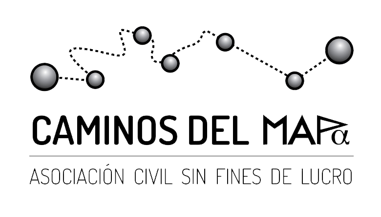
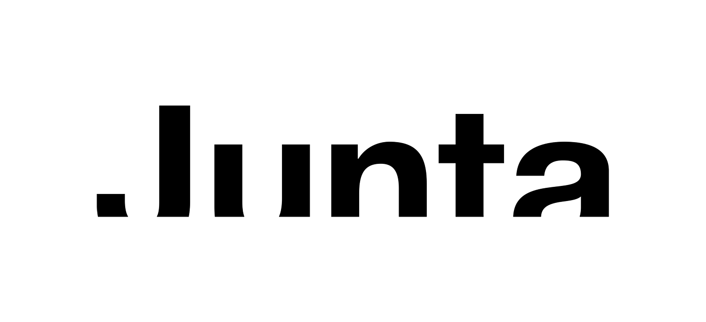
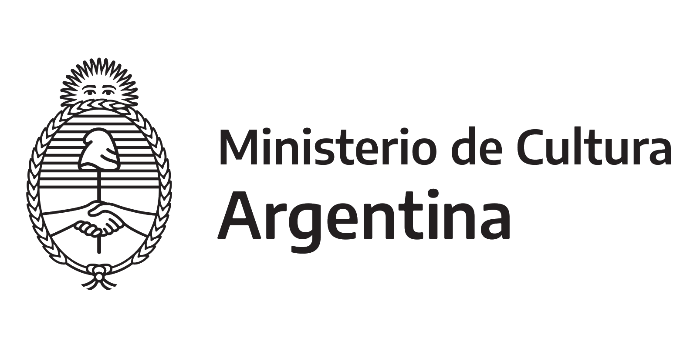
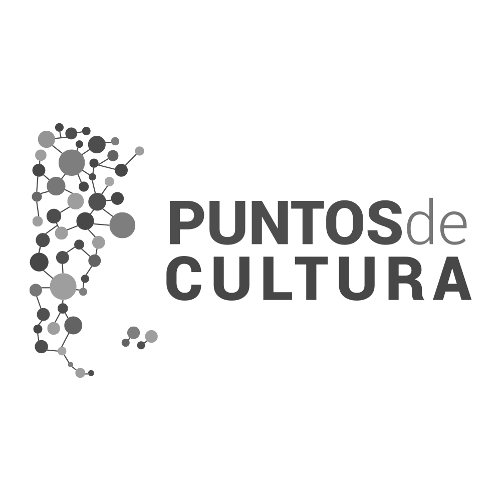

Espacio de Arte
Las Flores, Buenos Aires, Argentina — desde 2012
Scroll
Las Flores, Buenos Aires, Argentina — desde 2012
El Espacio
MAPA nace en febrero de 2012 en Las Flores, Provincia de Buenos Aires, Argentina. En 2016 creamos la Asociación Civil Caminos del Mapa para acompañar y fortalecer los proyectos de nuestro espacio.
Somos un espacio de exhibición y encuentro que celebra el arte visual en todas sus formas, construyendo puentes entre artistas y comunidad.
Nos declaramos a favor de nuevas prácticas, nuevos vínculos y la construcción colectiva del campo artístico.
Impulsamos
Un aporte al sector artístico desde la gestión, la creación, la producción y circulación de arte.
Realizamos
Muestras individuales y colectivas de artistas, declarándonos a favor de nuevas prácticas y nuevos vínculos.
Promovemos
La obra de artistas visuales que viven y trabajan en nuestro pueblo y colaboramos con artistas de distintas regiones.
Creamos
Un punto de encuentro entre la comunidad y sus artistas, ofreciendo herramientas para la transformación social.
Creemos
En la construcción colectiva del campo artístico y en la solidaridad como motor de cambio cultural.
Artistas
Exposiciones
2023
2022
2012–2021
Sala Virtual
Nuestra sala virtual amplía los límites físicos del espacio, permitiendo que artistas y público de todo el mundo puedan acceder a las obras y propuestas de MAPA. Una extensión digital de nuestro compromiso con la circulación del arte.
Programas Públicos
Talleres de artes visuales
Talleres abiertos a la comunidad con artistas del espacio. Pintura, grabado, escultura y fotografía para todas las edades.
Charlas y conversatorios
Encuentros de reflexión sobre arte contemporáneo, gestión cultural y el rol del artista en la comunidad.
Visitas guiadas
Recorridos por las exposiciones con los artistas o curadores para escuelas, grupos e instituciones.
Residencias artísticas
Programa de residencias para artistas locales e internacionales. El espacio como laboratorio de creación.
Asociación
En 2016 creamos la Asociación Civil Caminos del Mapa para acompañar y fortalecer los proyectos de nuestro espacio. Una estructura que nos permite sostener iniciativas de largo plazo, gestionar fondos y construir redes con otras instituciones culturales.




Puntos de Cultura
MAPA forma parte de la Red de Puntos de Cultura del Ministerio de Cultura de la Nación. Este reconocimiento nos permite articular con otras organizaciones culturales del país, acceder a programas de formación y financiamiento, y fortalecer el tejido cultural de nuestra comunidad.
Contacto